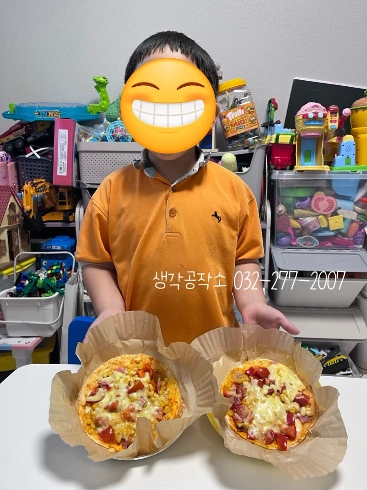
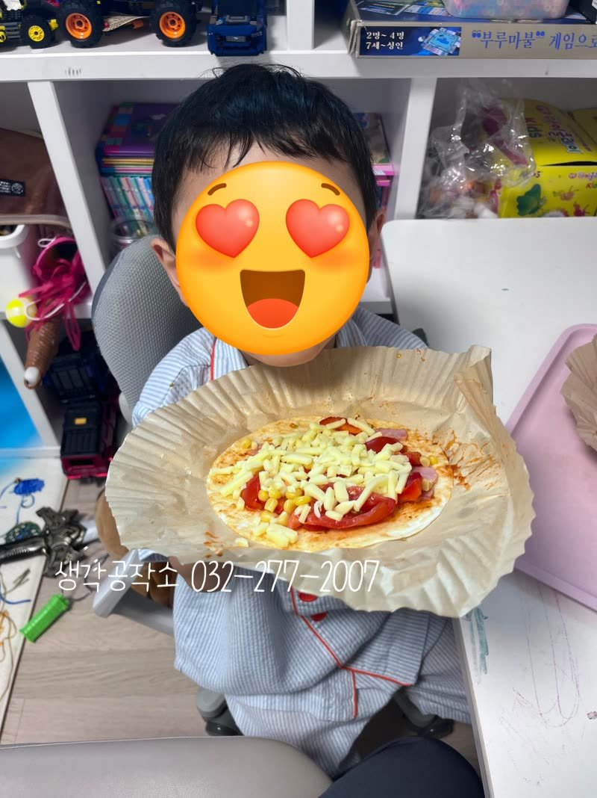
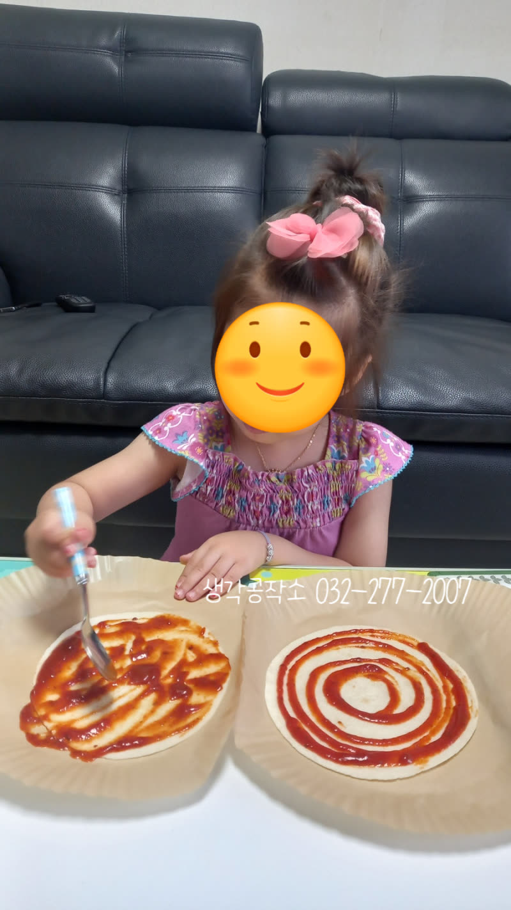
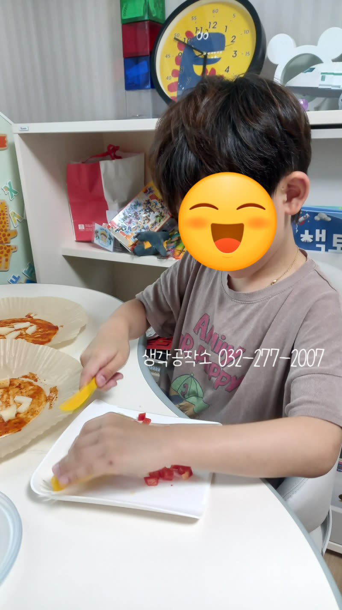
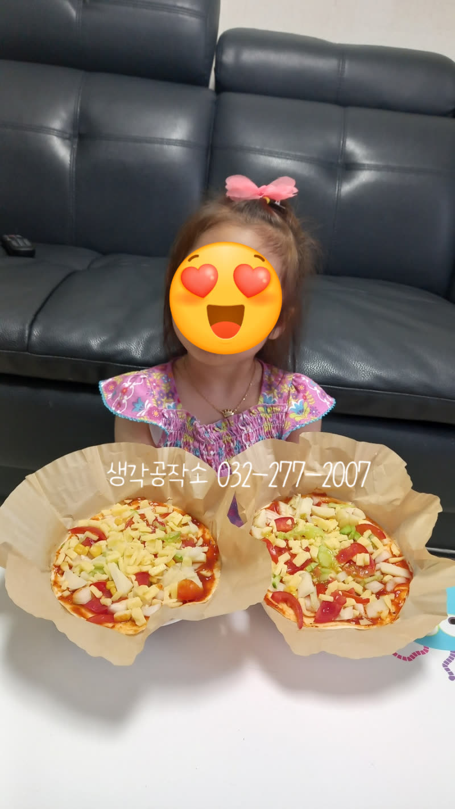
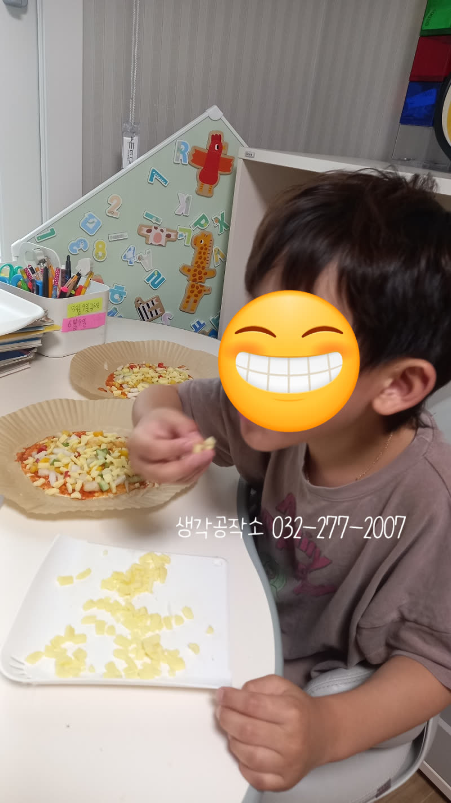
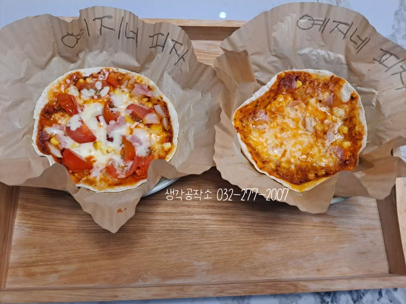
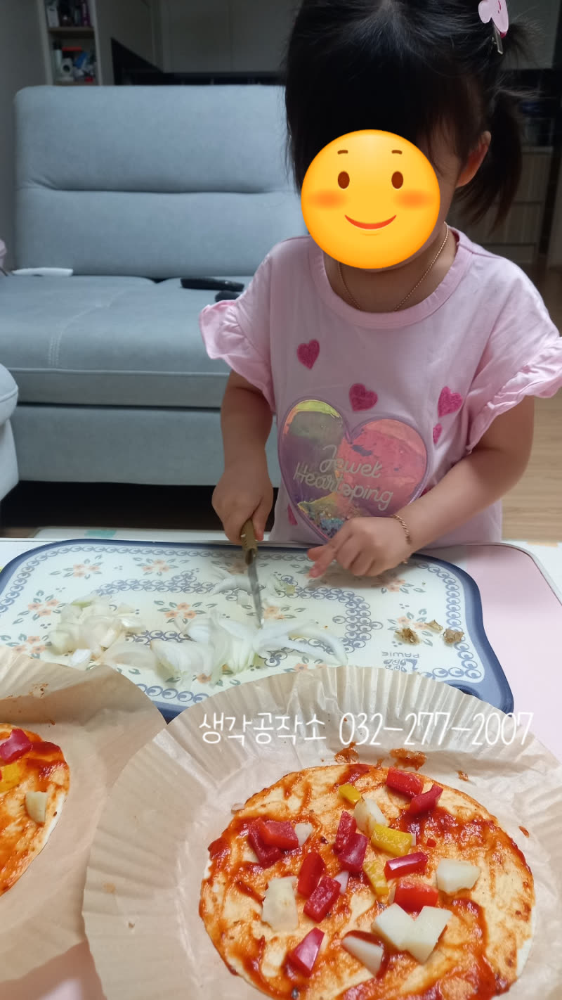
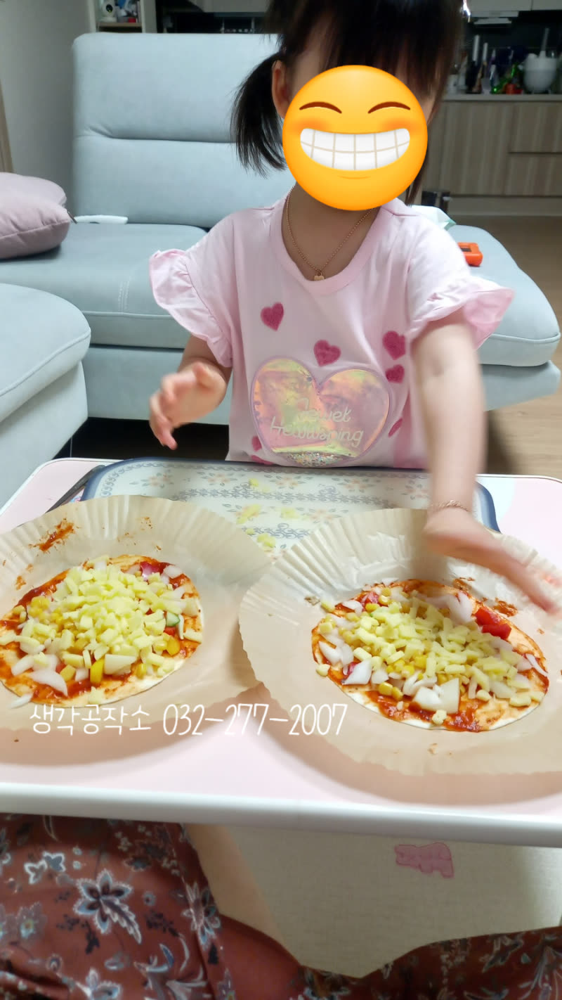

"엄마, 제가 만들었어요!" 🤩 아이표 또띠아 피자 만들기!🍕
안녕하세요, 생각공작소입니다. :)
오늘은 아이들과 함께 맛있는 또띠아 피자🍕를 만드는
즐거운 요리 시간을 가졌습니다!
아이들은 피자 만들 시간만을 오매불망 기다리며😌
환한 얼굴로 선생님을 반겨주었습니다. 직접 재료를 만지고 맛보며,
오감을 활짝 열었던 특별한 시간이었답니다.


식탁 위에 놓인 색색깔의 요리 재료들을 보며
눈으로 먼저 맛을 보고, 손으로 직접 만져보며 촉감을 느꼈습니다.
코를 킁킁거리며 채소의 향기를 맡아보는 모습도 정말 사랑스러웠습니다.
특히, 채소를 한 톨 한 톨 잘라내며
고사리 같은 손으로 오감을 느끼는 모습이 정말 인상 깊었습니다. 😊


한 아이는 생 양파를 맛보고선🧅
"선생님, 양파는 처음 먹어봐요! 매운 맛이 나요, 눈도 매워요!
라고 솔직하게 표현해 주었습니다.
그리고 양파를 익히면 달고 맛있어진다는 말에 신기해하며 눈을 반짝였습니다. ✨
처음 접하는 재료에 대한 호기심과
용감하게 도전하는 모습에 칭찬을 아끼지 않았습니다 !


아이들은 또띠아 위에 토마토소스🍅와 다양한 채소🫑
치즈🧀를 듬뿍 올리며
자신만의 피자를 정성껏 만들었습니다 !
피자를 완성한 한 아이는 "할아버지 갖다 드릴 거예요!"라며
소중히 피자를 포장하는 기특한 모습을 보여주었습니다.
사랑하는 사람을 생각하는 아이의 따뜻한 마음에 모두가 미소 지었습니다.😄



수업이 끝난 후, 아이들은 엄마에게 자신이 만든 피자를 자랑했습니다. 😄
"와~ 우리 딸이 만들었어? 정말 멋지다! 최고야!"라는
폭풍 칭찬에 어깨를 으쓱이며 기가 살아나는 모습을 보여주었습니다.
직접 만든 피자를 통해 얻은 성취감과 엄마의 칭찬은
아이들에게 더 큰 행복과 자신감을 선물한답니다🍕
오늘 아이들이 만든 또띠아 피자처럼,
아이들의 마음속에도 즐거움과 자신감이 가득 채워졌기를 바랍니다.
오감쑥쑥 서비스가 우리 아이들의 즐거운 성장에 든든한 밑거름이 되도록,
저희 생각공작소가 아이들의 오감을 깨우는 행복한 경험들을 계속 만들어가겠습니다! 🙌
인천시 남동구, 연수구, 미추홀구, 서구 에 위치한 #심리상담센터 로
전연령층과 전직종을 대상으로 #심리상담 을 도와주는 곳입니다. :)
평생을 미술치료와 심리상담에 종사하신 소장님과
실력과 경험 많은 상담사들이 당신을 기다리고 있습니다.
더욱 자세한 정보는 문의를 통해 확인해주세요 :)
T. 032-277-2007